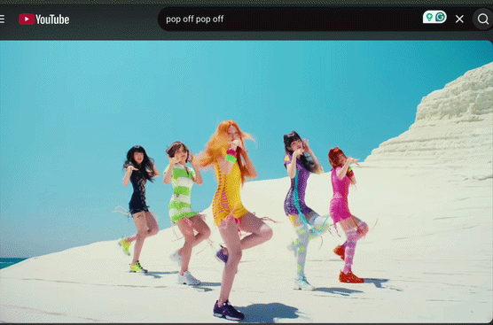

⋆｡°✩click below to be reborn⋆｡°✩
⋆｡°✩click below to see under the internet⋆｡°✩
⋆｡°✩click below for websites i conjured⋆｡°✩
｡°✩click below to experience a panic attack⋆｡°✩


i'm currently working on my p5.js skills, here's a little sketch i made inspired by my friend hannah lee ig: @hl3e.213_ , @sakotos and tiktok @hanadotnet
